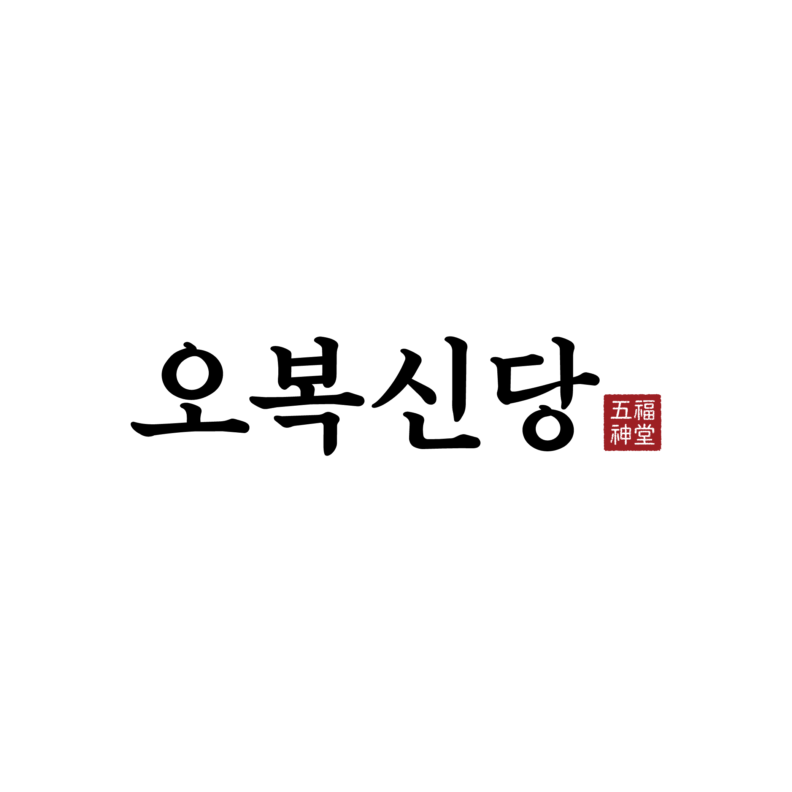
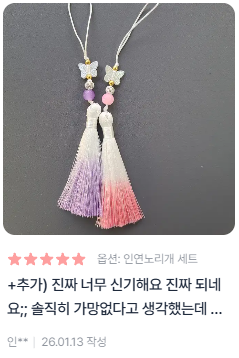
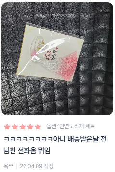
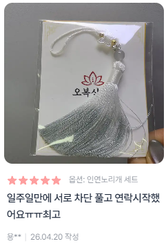
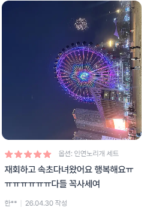

감정 분석 · 관계 심리
이 오복할미가 헤어진 그 사람과의 재회 가능성을12가지 질문으로 섬세하게 분석해주마.
약 4분 소요 · 무료
오복할머니가점을 보는 중이에요...
인연의 실타래를 풀고 있어...
재 회 가 능 성
✓ 잘한 점
△ 아쉬운 점
→ 앞으로의 행동이 중요해요
OBOKSINDANG
애정운과 인연운의 좋은 흐름을 끌어당기는오복신당의 복물, '인연노리개'를 지녀보세요.
다시 이어지고 싶은 단 한 사람을 떠올리며 부적처럼 가까이 지녀보세요.신기하게 끊겼던 연락이 다시 닿고,멀어진 인연이 가까워졌다는 이야기가 이어지고 있는 노리개예요.



